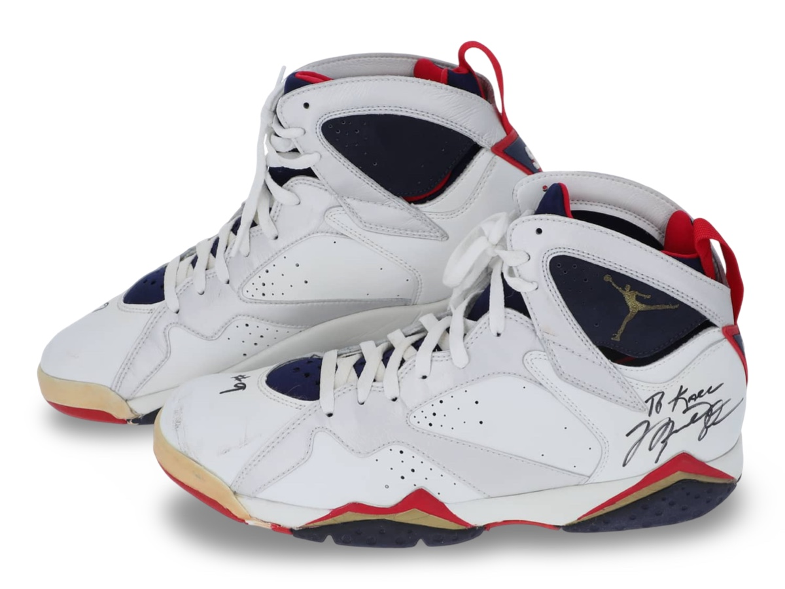
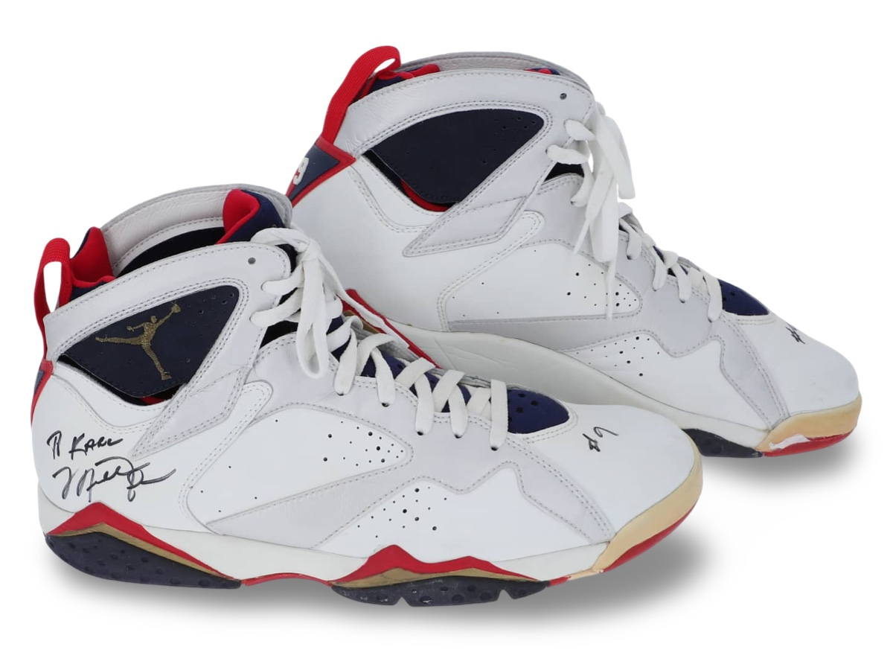
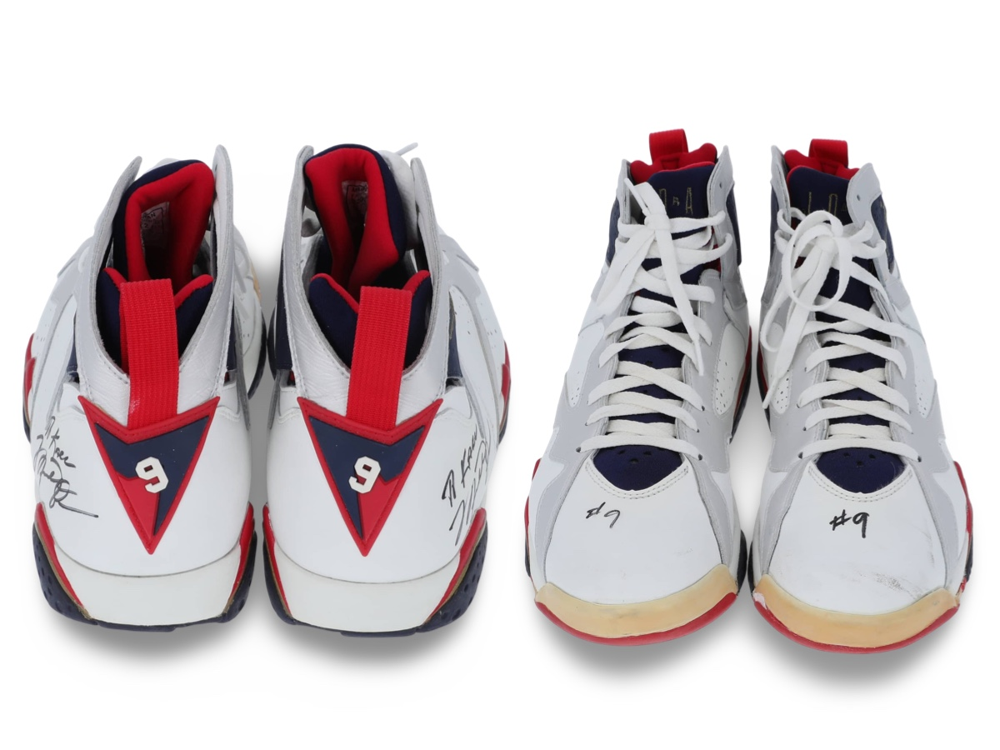
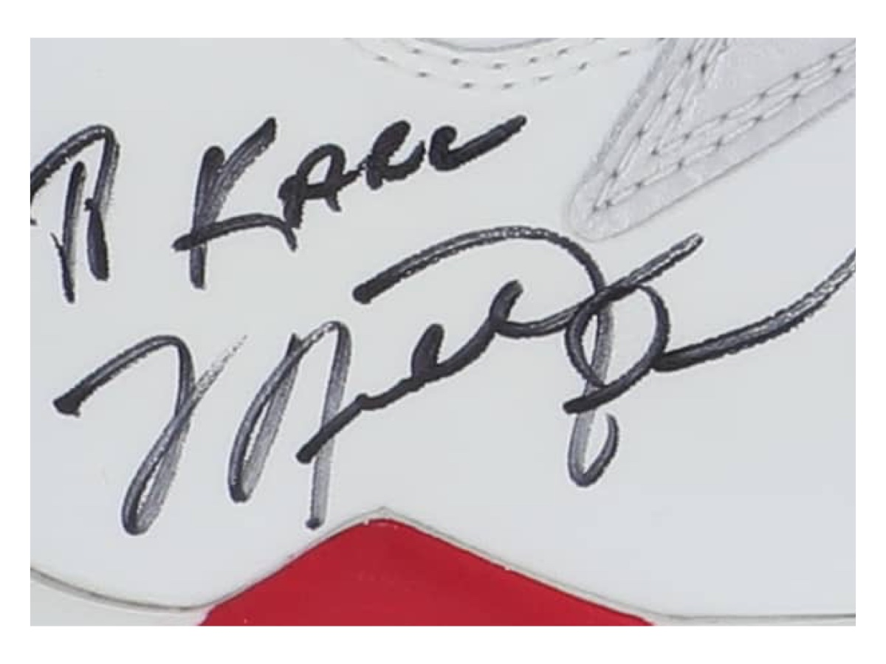
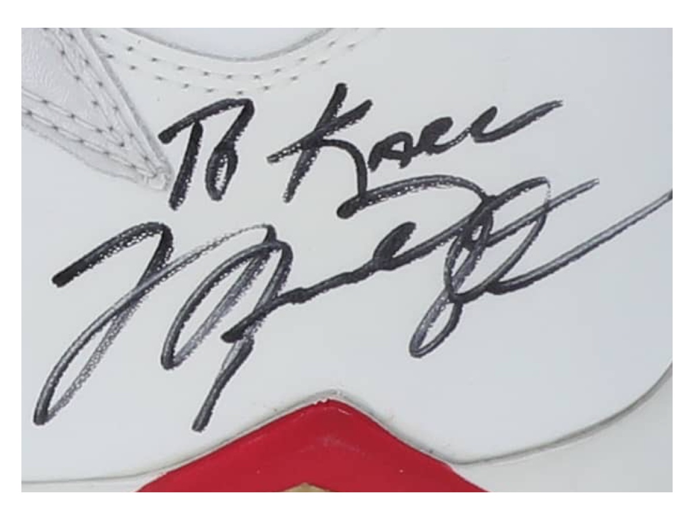

Air Jordan VII attributed to Olympic games in 1992.
Dream Team used in 1992 - formerly owned by Karl Malone.
Public Sale
- Auction House: Goldin Auctions
- Sale Date: May 24, 2024
- Lot #: 2
- Sale Price: $420,400
Photo Match Details
- Photo-Matched: Yes
- Games Photo-Matched: 1
- Photo-Matched By:MeiGray, SIA
Research & Provenance
- Provenance comes from Dream Team teammate and friend Karl Malone, these sneakers were part of the of the Karl Malone collection.